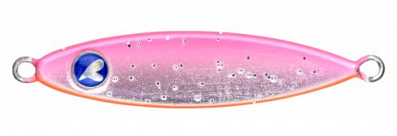
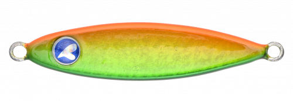
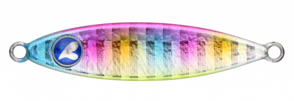
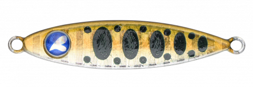

シーライドミニ
（SeaRide mini）
シーライドミニはBlueBlue（ブルーブルー）のマイクロメタルジグです。
ロッドを軽くあおって巻くだけでダートするシーライドの性能はそのままに、ライトソルトゲーム向けに設計し直したモデル。止めて落とすだけで生まれる超スローな水平フォールが「喰わせの間」を作り、ただ巻きでもスプーンのように泳ぎます。

画像出典:BlueBlue公式HP
スペック
- メーカー
- BlueBlue（ブルーブルー）
- タイプ
- マイクロメタルジグ
- ウェイト
- 3g／6g／9g／12g／15g
- フック
- トレブルフック＆ティンセル付きアシストフック標準装備
- ターゲット
- アジ・メバル・カマス・メッキ・ハタ類・小型青物ほか
- 価格
- 780円〜925円（税別）
▼今すぐチェック

シーライドミニの特徴
止めて落とすだけの微振動フォールで、ライトゲームの魚を誘う
-
超スローな水平フォール
独自のバランスから生まれる超スロー水平フォールで、絶妙な「喰わせの間」を作ります。止めて落とすだけで自動的に微振動しながらフォールします。
-
ただ巻きでもスプーンのように泳ぐ
ただ巻きでもスプーンのようにスイミング。難しい操作をしなくても、巻くだけで魚を誘えます。
-
ダートとフラッシングで誘える
トゥイッチを入れるとダートとフラッシングで誘えます。ミノーやワームでは届かないポイントや強風の中でも、抜群の飛距離が出ます。
シーライドミニの使い方
基本はキャストして沈め、ロッドを軽くあおってから止めて落とす「ダート＆フォール」。フォール中のアタリが多いので、ラインの動きに注意しましょう。
反応がないときは、ただ巻きでスプーンのように泳がせたり、トゥイッチでダートさせたりと誘い方を変えてみましょう。
シーライドミニの得意な状況
堤防や漁港でのライトゲーム。アジ・メバル・カマス・メッキ、小型の青物やハタ類まで幅広く狙えます。ワームやミノーでは届かない沖のポイントを狙いたいときや、風が強い日に向いています。
ワンポイント
3g・6gは漁港のライトゲーム、12g・15gは沖の潮目や深場、小型青物狙いと、狙う距離と水深で重さを選びましょう。
シーライドミニのウェイトの使い分け
| モデル | 全長／自重 | 得意な場面 |
|---|---|---|
| 3g | 3g | 漁港のアジ・メバルなど、ライトゲームの近距離戦に |
| 6g | 6g | 漁港や堤防の基準ウェイト |
| 9g | 9g | 少し沖や深い場所、風があるときに |
| 12g | 12g | 沖の潮目や、カマス・メッキなどの回遊魚に |
| 15g | 15g | 深場や潮の速い場所、小型青物狙いに |
もっと大きな魚や遠くを狙いたいときは、20g〜60gのシーライドに持ち替えましょう。
人気カラー
公式ラインナップから4色を紹介します（カラー名は公式の表記のまま）。

#02 チェリーオレンジオレンジ系のアピールカラー。濁りや曇りの日に。

#03 アンティークゴールドアンティーク調のゴールド。日中のフラッシングで見せたいときに。

#06 コットンキャンディピンク系のパステルカラー。朝夕のマズメや常夜灯まわりに。

#07 サケ稚魚サケの稚魚を意識したナチュラルカラー。小さなベイトがいるときに。
画像出典:BlueBlue公式HP
シーライドミニに似ているルアー
-
 シーライド
ブルーブルー
詳細はこちら＞
シーライド
ブルーブルー
詳細はこちら＞
20g〜60gの同シリーズ。もっと大きな魚や、遠くのポイントを狙いたいときに。
-
 メタルシャルダス
ブルーブルー
詳細はこちら＞
メタルシャルダス
ブルーブルー
詳細はこちら＞
8g〜35gのメタルブレードベイト。ブレードのフラッシングで強くアピールしたいときに。
-
 鉄PANバイブ
ジャクソン
詳細はこちら＞
鉄PANバイブ
ジャクソン
詳細はこちら＞
9g〜26gの鉄板バイブ。巻きでの振動で探りたいときに。